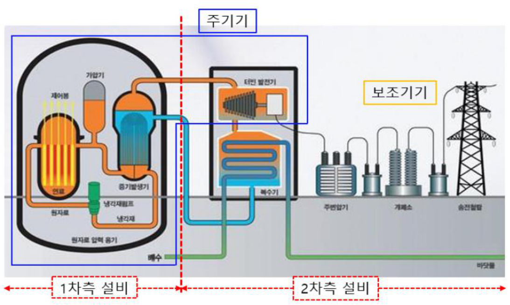

원자력 — 미국은 «AP1000 반복 건설»로 산업을 재건 중, 한국은 주기기·시공으로 먼저 들어가고 APR1400은 2기로 문을 엶
한눈에 보기
결론
- 미국 원전은 «몇 기 짓기»가 아니라 40년 공백을 메우는 산업 재건 → 첫 단계는 FID보다 장납기 기자재(LLI) 선발주 (KB, 2026-06-01)
- 한미 원전 협력은 AP1000 6기 + APR1400 2기, 최대 1,200억 달러 틀로 정리됨 → 수혜 크기는 «어느 노형에서 어떤 범위를 맡나»로 갈림 (NH, 2026-11-16)
- 국내는 12차 전기본에 신규 대형원전·SMR 추가가 쟁점, 체코는 시공 협상 결렬로 2027년 7월 시공사 재선정 → 2027년은 «기대 → 수주 숫자» 검증 구간
| 지표 | 값 | 의미 | 출처 |
|---|---|---|---|
| 미국 원전 목표 | 2030년 10기 착공 | 2050년 400GW | (iM, 2026-09-28) |
| 대미투자 원전 | 8기 · 최대 1,200억$ | AP1000 6 + APR1400 2 | (NH, 2026-11-16) |
| DOE 공급망 대출 | 175억$ | AP1000 10기 LLI 선구매 | (신한, 2026-06-25) |
| 체코 두코바니 5·6 | 약 26조 원 | 시공사 2027-07 재선정 | (iM, 2025-12-01; 대신, 2026-10-30) |
| 12차 2040 최대전력 | 158.4~165.0GW | 4월 안보다 약 27GW↑ | (유안타, 2026-09-10) |
flowchart LR A["연료<br/>우라늄·변환·농축·성형"] --> B["노형 설계<br/>APR1400·AP1000·SMR"] B --> C["주기기<br/>원자로·증기발생기·RCP·터빈"] B --> D["보조기기 BOP<br/>펌프·밸브·열교환기·케이블"] C --> E["시공 EPC<br/>원자로·터빈 건물"] D --> E E --> F["운영·정비<br/>계획예방정비·계속운전"] F --> A G["발주·금융<br/>정부·유틸리티·DOE 대출·대미투자"] --> B H["수요<br/>AI 데이터센터·기저전원 교체"] --> G
구성: 원전 밸류체인 분류(유진, 2026-06-11), 미국 발주·금융 구조(KB, 2026-06-01), 주기기·보조기기 구분(iM, 2026-09-28)
- 원천 범위: 원전 관련 리포트 대부분이 2026년 3~11월에 몰림 → 2025년 말~2026년 초 기준선은 얇음 (2025년 발간분 4건만 활용)
- 관련 노트: 00_에너지_index · 01_에너지_용어집 · 02_에너지_전력수요 · 06_에너지_발전설비와가스 · 08_에너지_전력시장과요금 · 09_에너지_시장규모모델 · 10_에너지_하우스시각_변경이력 · 11_에너지_트래킹캘린더
① 기초: 노형·설비 구성·글로벌 원전 현황
요약
- 상업 원전의 대부분은 가압경수로(PWR) → APR1400·AP1000·APR1000·대부분의 SMR이 같은 계열
- 원전 1기 = 1차측(원자로·증기발생기·냉각재펌프) + 2차측(터빈·복수기) + 보조기기·전력 연계
- 세계 원전은 늙어 감(평균 31.9년) → 신규 건설 + 계속운전 + 출력 증강이 동시에 필요
노형 계보 (세대·냉각재)
| 세대·유형 | 냉각재 | 대표 노형 | 연료 |
|---|---|---|---|
| 3세대 PWR(대형) | 경수 | APR1400·AP1000·APR1000 | LEU |
| 3.5세대 PWR SMR | 경수 | NuScale·i-SMR·SMR-300 | LEU |
| 3.5세대 BWR SMR | 경수 | BWRX-300 | LEU |
| 4세대 SFR | 소듐 | Natrium·Aurora | HALEU |
| 4세대 HTGR | 헬륨 | Xe-100 | TRISO |
| 4세대 MSR | 용융염 | IMSR | LEU |
자료: 세대·냉각재 구분(iM, 2026-09-28), 연료 구분(하나, 2026-10-12, EIA 2026-04 표). LEU = 저농축 우라늄, HALEU = 고순도 저농축 우라늄(농축도 5~20%)
설비 구성: 주기기 vs 보조기기

출처: iM증권, 2026-09-28, p.41 (원 자료 한수원KNP)
| 구분 | 주요 기기 | 성격 |
|---|---|---|
| 1차측 주기기 | 원자로·증기발생기·가압기·RCP | 대형 단조·고난도 제작 |
| 2차측 주기기 | 터빈·발전기 | 화력과 기술 공유 |
| 계측제어 | MMIS(I&C) | 노형 원천사 관할 큼 |
| 보조기기(BOP) | 펌프·밸브·열교환기·케이블 | 다수 중소 공급사 |
| 연료 | 연료봉·지지격자 | 노형별 전용 설계 |
자료: 유진(2026-06-11) 원전 밸류체인 분류, iM(2026-09-28). RCP = 원자로 냉각재펌프
- 대형원전 1기 연료 장전량 100~200톤, 교체 주기 18~24개월 (키움, 2025-12-10)
- 연료비 비중이 낮아 가스·석탄 대비 연료 가격 충격에 둔감함
- 발전원가 중 연료비 비중: 원전 34% vs 석탄 78%·가스 87% (LS, 2026-05-19)
글로벌 원전 현황 (2026년 4월)
| 국가 | 운영(기) | 운영 GW | 건설 중(기) | 건설 GW |
|---|---|---|---|---|
| 세계 합계 | 430 | 415.3 | 77 | 87.8 |
| 미국 | 94 | 102.5 | — | — |
| 중국 | 58 | 60.7 | 38 | 44.5 |
| 프랑스 | 56 | 64.0 | 1 | 1.7 |
| 한국 | 26 | 26.1 | 2 | 2.8 |
| 인도 | 21 | 8.2 | 8 | 6.6 |
자료: IAEA, iM(2026-09-28). 미국 설비용량은 BNK 97GWe(2026-04-11)로 기준(총·순출력)에 따라 차이 있음
원전은 늙어 간다 — 평균 가동연수
xychart-beta title "세계 원전 평균 가동연수 (년)" x-axis ["1990", "2000", "2010", "현재"] y-axis "년" 0 --> 35 line [10.8, 18.4, 25.8, 31.9]
자료: IAEA·에너지경제연구원, iM(2026-09-28). 1990 416기·2000 435기·2010 441기 기준. «현재» = 2025년 분포 기준
- 30년 이상 원자로가 전체의 67% (iM, 2026-09-28)
- 미국은 94기 중 80기 이상이 20년 연장 운전 허가를 받았거나 예정 (BNK, 2026-04-11)
- 1978년 이후 착공해 상업운전까지 간 미국 원전은 Vogtle 3·4호기 2기뿐 (KB, 2026-06-01)
- 용어는 01_에너지_용어집
② 전방 수요: 미국 르네상스·한국 12차 전기본·해외 수주
요약
- 미국: 행정명령(2025-05) → DOE 175억$ LLI 대출(2026-06) → 한미 8기 MOU(2026-09)로 «정책 → 금융 → 프로젝트» 단계가 진행됨
- 한국: 3대 메가프로젝트로 2040 최대전력 전망이 약 20% 오름 → 12차 전기본에 신규 원전 추가가 거의 확실시, 규모가 쟁점
- 해외: 체코 이후 팀코리아 후보는 베트남·UAE·튀르키예·체코 테믈린 순, 사우디는 노형이 갈림
미국: 정책 → 금융 → 프로젝트
| 시점 | 조치 | 내용 | 출처 |
|---|---|---|---|
| 2024-07 | ADVANCE Act | NRC COL 심사 18개월 이내 | (KB, 2026-06-01) |
| 2025-05 | 행정명령 4건 | 2030년 10기 착공·400GW | (iM, 2026-09-28) |
| 2025-07 | OBBB | 원전 PTC·ITC 유지 | (iM, 2026-09-28) |
| 2025-10 | 정부-WEC 파트너십 | AP1000 800억$ 이상 | (KB, 2026-08-25) |
| 2026-06-23 | DOE 공급망 대출 | 175억$, AP1000 10기 | (신한, 2026-06-25) |
| 2026-08 | TVA 2026 IRP | 2040년 원전 최대 5.4GW | (대신, 2026-10-30) |
| 2026-09 | 한미 원전 8기 MOU | 상무부와 체결 | (대신, 2026-10-30) |
WEC = 웨스팅하우스. OBBB에서 신규 원전 ITC 기본 6%, 조건 충족 시 30%, 2032년 이후 단계 폐지(iM, 2026-09-28)
flowchart TB subgraph DOC["DOC 트랙: 정부·외국자본"] D1["상무부-WEC 파트너십<br/>800억$ · 8~10기"] --> D2["한·일 대미투자 자금"] end subgraph DOE["DOE 트랙: 유틸리티·상업"] E1["유틸리티 5~6곳<br/>자체자본 + EDF 융자"] --> E2["잠정 10기 + 5GW 출력증강"] end D2 --> L["LLI 선발주<br/>RPV·증기발생기·RCP"] E2 --> L L --> F["FID·착공"]
자료: KB(2026-06-01) «두 트랙 합산 최대 20기». EDF = 에너지부 에너지주도권금융실(구 LPO)
- 부지는 병목이 아님
- AP1000 활성 COL 부지 2곳·4기(약 4.4GW) + VC Summer 재개 시 3곳·6기(약 6.6GW) (KB, 2026-06-01)
- NRC가 21개 부지(23건)의 최단 인허가 경로를 공개(2026-03) (KB, 2026-06-01)
- 석탄발전소 394곳 중 약 80%가 원전 전환 가능, 잠재 250GW (KB, 2026-06-01)
- 당장은 신규보다 출력 증강
- CEG-구글 20년 PPA: 기존 11기 개조로 890MW 확보 (하나, 2026-10-12)
- VST: DOE 대출 최대 42억$로 433MW 증강 (하나, 2026-10-12)
- 데이터센터 전력 수요 자체는 02_에너지_전력수요
한국: 12차 전력수급기본계획
| 시점 | 2040 최대전력 | 전력소비량 | 출처 |
|---|---|---|---|
| 2026-04 잠정안 | 131.8~138.2GW | 657.6~694.1TWh | (유안타, 2026-09-10) |
| 2026-08 공개토론회 | 158.4~165.0GW | 847.3~885.1TWh | (유안타, 2026-09-10) |
| 증가분 내역 | 반도체 +20.6·DC +7.9GW | — | (미래에셋, 2026-09-14) |
| 필요 설비(예비율 22%) | 202GW | 11차 대비 40GW↑ | (NH, 2026-08-21) |
NH(2026-08-21)는 증가분을 반도체 21GW·데이터센터 8GW로 표기. DC = 데이터센터
xychart-beta title "8차 전기본 최대전력 전망 vs 실제 (GW)" x-axis ["2022", "2023", "2024", "2025"] y-axis "GW" 90 --> 100 line [93.3, 94.5, 95.7, 96.7] line [94.5, 93.6, 97.1, 96.0]
선 순서: ① 8차 전기본 전망 ② 실제. 자료: NH(2026-08-21). 과거 전기본 단기 전망은 실제와 ±1.5GW 안에 들어옴 → 이번 대폭 상향은 «메가프로젝트 실현 여부»가 변수
| 항목 | 내용 | 출처 |
|---|---|---|
| 11차 반영분 | 대형 2기(2.8GW) + SMR 1기(0.7GW) | (SK, 2025-11-27) |
| 11차 대형 2기 부지 | 경북 영덕(1.4GW×2) | (유진, 2026-06-22) |
| i-SMR 첫 후보지 | 부산 기장, 2035년 준공 목표 | (유진, 2026-06-22) |
| 정부 방침 | 공론화 거쳐 신규 원전·SMR 반영 | (하나, 2026-07-16) |
| 공론화위원회 | 10-02 출범, 300명 시민참여단 | (NH, 2026-11-16) |
| 일정 | 초안 2026-12 · 최종 2027-02 | (NH, 2026-11-16) |
- 11차 신규 2기는 2037~2038년 상업운전 목표 (키움, 2026-09-08)
- 11차 신규 원전 건설기간 가정 167개월 (SK, 2025-11-27)
- 유휴 부지: 한빛(영광)·새울(울주) 본부에 APR1400 각 2기 추가 가능 (하나, 2026-11-06)
- 하우스별 «몇 기 더?» 추정은 ⑥장, 요금·원전 VC 제도는 08_에너지_전력시장과요금
해외: 팀코리아 수주 후보
| 국가·프로젝트 | 규모 | 상황 | 출처 |
|---|---|---|---|
| 체코 두코바니 5·6 | APR1000 2기 | 2025-06 본계약, 시공 재선정 | (iM, 2025-12-01) |
| 베트남 닌투언2 | 2기 · 15~18조 원 | 팀코리아 유력 | (키움, 2026-09-08) |
| 체코 테믈린 3·4 | 2기 | 2027 결정, 우선협상권 | (키움, 2026-09-08) |
| UAE 바라카 5~8 | 최대 4기 | 2027~28 사업자 선정 기대 | (키움, 2026-09-08) |
| 튀르키예 시노프 | 4기 | 로사톰과 경합 | (키움, 2026-09-08) |
| 사우디 | 2기 | 노형 미정(⑥장 충돌) | (키움, 2026-09-08) |
| 폴란드 | AP1000 3기 | LLI 품목 확정(RPV·SG 미정) | (대신, 2026-10-30) |
- 프랑스: 2050년까지 EPR2 14기 + SMR 15기, 23GW 목표 (BNK, 2026-04-11)
- 러시아·프랑스가 자금·공기 문제로 차질 → 팀코리아 2030년까지 4개 이상 수주 가능 (키움, 2025-12-10)
- 글로벌 원전 설비 2050년: 현 정책 650GW · 공약 870GW · 탄소중립 1,000GW 초과 (IEA 인용, iM, 2026-09-28)
③ 기술 심화: 대형 노형 비교·SMR 노형별 비교
요약
- 대형: AP1000은 «미국에서 지어 본 유일한 3세대», APR1400은 «제때·예산 안에 반복 건설한 실적» → 미국 단기 표준은 AP1000
- SMR: 3.5세대 경수로(BWRX-300·NuScale·SMR-300)는 연료·인허가가 쉽고, 4세대(Natrium·Xe-100)는 HALEU·TRISO 연료가 병목
- 인허가는 예상보다 빠름(Natrium·BWRX-300 건설허가) → 지연 요인은 비용 분담·단조품 납기·연료로 이동
대형원전 노형 비교
| 항목 | APR1400 | AP1000 | APR1000 |
|---|---|---|---|
| 원천 | 한수원(한국) | 웨스팅하우스(미국) | 한수원(한국) |
| 전기출력 | 1,400MW | 1,117MWe | 1,000MWe |
| 열출력 | 3,983MWt | 3,415MWt | ⚠ 원문 없음 |
| 미국 NRC 인증 | 2019년 설계인증 | DCD Rev.20 신청(26-03) | 없음 |
| 대표 사례 | UAE 바라카 4기 | Vogtle 3·4 | 체코 두코바니 5·6 |
자료: 출력·열출력(iM, 2026-09-28), AP1000·APR1000 정격(대신, 2026-08-25), 인증(KB, 2026-06-01). 교보(2026-02-03)는 두코바니를 APR1400·2,800MW로 표기 → 다수 하우스 표기(APR1000)를 따름 ⚠
- AP1000이 미국 단기 표준인 이유 (KB, 2026-06-01)
- NRC 규제 안에서 인허가 → 건설 → 운영을 끝까지 간 3세대 노형
- DCD Rev.20 = Vogtle 4호기 실제 건설 경험을 표준에 반영 → 초도호기 리스크 축소
- APR1400의 무기와 약점
- RCP·증기발생기·MMIS·터빈까지 국산 공급망 → 두코바니 입찰 kW당 단가가 EDF보다 약 30% 낮았음 (iM, 2026-09-28)
- 미국 본토 건설 실적이 없어 «초기 시행 리스크»로 보일 수 있음 (KB, 2026-06-01)
- NRC 설계인증 유효기간 15년 → 40년 연장(2025-07) (iM, 2026-09-28)
대형원전 건설비·공기
| 기준 | 건설비 | 공기 | 출처 |
|---|---|---|---|
| AP1000 초도(2기) | 200~260억$ | FNC→COD 66개월 | (NH, 2026-08-26) |
| AP1000 반복(2기) | 140~170억$ | 20~30% 단축 | (NH, 2026-08-26) |
| Vogtle 3·4(기당) | 170~180억$ | 약 10년 | (유진, 2026-09-21) |
| 두코바니 기준 | 기당 85억$ | 2029 착공 | (NH, 2026-08-26) |
| 대미투자(기당) | 125억+예비 25억 | — | (NH, 2026-11-16) |
| AP1000 순공사비 가정 | 9,285$/kW | — | (대신, 2026-08-25) |
NH(2026-08-26) 수치는 카메코 자료(MIT 연구 기반). FNC = 원자로 건물 첫 콘크리트 타설, COD = 상업운전. 같은 Vogtle을 iM(2026-09-28)은 «계획의 2배인 14년, 비용 2.5배»로 표현 → 기간 기산점이 다름 ⚠
- 반복 건설 효과는 «연 2기 이상 꾸준한 발주»가 전제 (NH, 2026-08-26)
- 미국 건설 여건 악화: 10년물 금리 약 5%(Vogtle 당시 0.9~3.7%), 임금·기자재 60~77% 상승 (유진, 2026-09-21)
- 국내 사례: 새울 1호기 착공 → 상업운전 8.7년 (삼성, 2026-03-14)
SMR 노형별 비교
| 노형(개발사) | MWe | 유형·연료 | 진척 | 출처 |
|---|---|---|---|---|
| BWRX-300(GVH) | 300 | BWR·LEU | 캐나다 착공, TVA 건설허가 | (키움, 2025-12-10; 하나, 2026-10-12) |
| NuScale VOYGR | 77 | PWR·LEU | 설계인증 보유, PPA 협의 | (삼성, 2026-03-14; 유진, 2026-07-28) |
| SMR-300(Holtec) | 300 | PWR·LEU | Palisades 2기 추진 | (KB, 2026-06-01) |
| Natrium(TerraPower) | 345 | SFR·HALEU | 26-03 건설허가, 4월 착수 | (하나, 2026-10-12) |
| Xe-100(X-energy) | 80 | HTGR·TRISO | 27-1Q 건설허가 목표 | (유진, 2026-10-26) |
| i-SMR(한국) | 170 | PWR·LEU | 2028 표준설계인가 목표 | (삼성, 2026-03-14) |
| Rolls-Royce SMR | 470 | PWR·LEU | 영국 Wylfa, 27년 제작 발주 | (삼성, 2026-03-14; 유진, 2026-07-28) |
| AP300(WEC) | 330 | PWR·LEU | 2027 설계인증 목표 | (하나, 2026-10-12; 삼성, 2026-03-14) |
GVH = GE버노바-히타치. AP300 출력은 삼성(2026-03-14) 300MWe, Oklo Aurora는 하나 75MWe vs 삼성 15MWe로 하우스 간 표기가 다름 ⚠. 중국 ACP100(125MWe)은 2026년 상업운전 목표(삼성, 2026-03-14)
SMR 프로젝트 현황
| 프로젝트 | 노형·규모 | 핵심 숫자 | 출처 |
|---|---|---|---|
| 캐나다 Darlington | BWRX-300 4기 | 총 209억 CAD, 1호 2030 | (키움, 2025-12-10) |
| 〃 호기별 비용 | 1호 vs 후속 | 61억 → 44억 CAD | (키움, 2025-12-10) |
| 미국 Kemmerer | Natrium 1기 | 총 40억$ 중 절반 DOE | (KB, 2025-12-03) |
| 미국 Palisades | SMR-300 2기 | DOE 보조금 4억$ | (KB, 2026-06-01) |
| 미국 Long Mott | Xe-100 4기 | 320MW | (유진, 2026-10-26) |
| 미국 Cascade·AEP | Xe-100 12기씩 | 후속 최대 1.92GW | (유진, 2026-10-26) |
| TVA-ENTRA1 | NuScale | 6GW PPA 협의 | (유진, 2026-07-28) |
| 루마니아 도이체슈티 | NuScale 6모듈 | 462MW FEED | (BNK, 2026-04-11) |
Palisades 보조금을 교보(2026-02-03)는 4.5억$(약 6,000억 원)로 표기 ⚠. Amazon은 X-energy 지분 22.9% 보유(유진, 2026-10-26)
- 경수로 SMR(3.5세대)
- 기존 대형원전 규제·연료를 그대로 씀 → 지연 요인은 비용 분담·단조품 납기 (하나, 2026-10-12)
- NuScale 예상 건설기간: 인허가 제외 40개월 미만 (하나, 2026-10-12)
- 비경수로 SMR(4세대)
- HALEU 연료 공급망 부재가 최대 불확실성 (하나, 2026-10-12)
- Natrium 시공사 벡텔이 와이오밍 현장 인력 철수 발표 (유진, 2026-09-21)
- 경제성 목표: i-SMR 건설단가 목표 3,500$/kW (삼성, 2026-03-14)
- 시장 전망: SMR 누적 2030년 0.9GW → 2050년 404GW (NEA 인용, iM, 2026-09-28)
④ 공급망·캐파: 설계·주기기·보조기기·시공·정비·연료
요약
- 미국 공백은 «운영»이 아니라 «짓고 만드는 능력» → 초대형 단조(1.5만 톤급 프레스)와 대형원전 EPC가 핵심 병목
- 같은 1기라도 노형에 따라 한국 주기기 공급 범위가 5~6배 차이 → AP1000은 RPV·SG 위주, APR1400은 풀 스코프
- 정비는 계속운전·해외 장기정비로 커지고, 연료는 러시아산 대체·HALEU가 숙제
공급망 단계별 지도
| 단계 | 한국 사례 | 해외 사례 | 병목 |
|---|---|---|---|
| 노형·종합설계 | 한전기술 | WEC·EDF·MHI | 1·2차 계통 설계사 소수 |
| 주기기(NSSS) | 두산에너빌리티 | JSW·BWXT·Curtiss-Wright | 초대형 단조 |
| 터빈·발전기 | 두산에너빌리티 | 도시바 | — |
| 보조기기 | BHI·우진·삼진공작 | L&T(내부 모듈·밸브) | 원전 품질 인증 |
| 시공 | 현대·대우·삼성물산 | Bechtel·Kiewit | 숙련 인력 |
| 정비 | 한전KPS | — | 1급 정비 자격 |
| 연료 | 한전원자력연료 | Cameco·Urenco | 농축·HALEU |
자료: 유진(2026-06-11) 밸류체인 표, 삼성(2026-03-14) 설계사 소수, KB(2026-06-01) 미국 시공·단조, 키움(2025-12-10) Vogtle 공급사. 회사명은 사례
초대형 단조: AP1000 일체 단조 요건 = 1.5만 톤급 프레스 + 500톤급 잉곳
| 단조사(국가) | 프레스(톤) | 최대 잉곳(톤) | 대형 단조(기/년) |
|---|---|---|---|
| 두산에너빌리티(한국) | 17,000 | 540 | 5 |
| JSW(일본) | 14,000 | 650~670 | 12 |
| Lehigh Heavy Forge(미국) | 10,000 | 260 | ⚠ 원문 없음 |
| NAF(미국) | 10,120 | 185 | ⚠ 원문 없음 |
자료: KB(2026-06-01). JSW는 원전 대형 단조 세계 시장의 약 80% 점유로 알려짐. 미국 두 곳은 SMR·방산 위주, RPV 일체 단조 불가
- 미국 대형원전 시공 실적은 Bechtel 한 곳에 쏠림(약 60기, 미국 전체의 40%+) (KB, 2026-06-01)
- Kiewit이 BWRX-300·Oklo·X-energy 시공에 참여하며 대안으로 부상, 대형 경수로 완공 실적은 없음 (KB, 2026-06-01)
- SMR 전용 공장: 2028년 하반기 연 20모듈 생산 체계 목표(한국 주기기사 사례) (유진, 2026-07-28)
노형별 한국 공급 범위 (1기 기준)
| 품목 | AP1000 건설 시 | APR1400 건설 시 | 출처 |
|---|---|---|---|
| 주기기 범위 | RPV + SG +α | 주기기 전체 + T/G | (키움, 2026-09-08) |
| 주기기 금액 | 4,000~5,000억 원 | 2.5~3.0조 원 | (키움, 2026-09-08) |
| 설계 범위 | 없음 또는 일부 | 종합 + 계통설계 | (키움, 2026-09-08) |
| 설계 금액 | 0~5,000억 원 | 6,000~8,000억 원 | (키움, 2026-09-08) |
교보(2026-02-03)는 팀코리아 기당 약 2조 원, WEC향 기당 약 0.5조 원으로 추정. RPV = 원자로 압력용기, SG = 증기발생기, T/G = 터빈·발전기
AP1000 기자재 가격 (Vogtle·VC Summer 4기, 2007~08년 기준)
| 품목 | 당시 공급사 | 기당 금액 |
|---|---|---|
| 증기터빈·발전기 | 도시바 | 약 2.5억$(추정) |
| 원자로용기 + 증기발생기 | 두산중공업 | 약 1.4억$ |
| I&C(MMIS) | WEC 자체 | 0.5~1억$(추정) |
| 격납용기 | CB&I·IHI | 0.75억$ |
| 냉각재펌프 4대 | Curtiss-Wright | 0.5억$ |
| 가압기 | Mangiarotti | 0.1~0.2억$(추정) |
자료: 메리츠(2026-09-16). 메리츠는 한국이 WEC 주주가 되면 RCP·MMIS를 뺀 대부분 기자재로 범위가 넓어질 수 있다고 봄
체코 두코바니 5·6 — 팀코리아 역할 분담 (참고 사례)
| 역할 | 범위 | 금액 | 출처 |
|---|---|---|---|
| 주계약·EPC 총괄 | 한수원 | 약 26조 원 | (iM, 2025-12-01) |
| 주기기 | NSSS 4.9 + T/G 0.7조 | 5.6조 원 | (교보, 2026-02-03) |
| 설계 | 종합 1.3 + 원자로계통 0.4조 | 1.7조 원 | (교보, 2026-02-03) |
| 시공(결렬) | 대우 55% · 두산 45% | ⚠ 미확정 | (유진, 2026-06-11) |
| 연료 | 초기노심 + 5주기 교체 | 계약 포함 | (iM, 2025-12-01) |
대신(2026-08-25) 추정 순공사비 대비 비중: 주기기 21.7%, 총 설계 6.2%, 주설비 공사 11.2%. 설계 금액을 SK(2025-11-27)는 1.3조 원으로 표기
정비·계속운전
| 항목 | 값 | 출처 |
|---|---|---|
| 수명연장 공사 | 호기당 약 150억 원 | (유진, 2026-06-11) |
| 수명연장 공사 주기 | 3~4년 → 1년 이내 | (유진, 2026-06-11) |
| 계획예방정비 기간 | 3개월 → 1년 이상 분산 | (대신, 2026-08-24) |
| 루마니아 체르나보다 1 | 4,850억 원(27-09~30-06) | (대신, 2026-08-24) |
| 체코 두코바니 정비 | 2028~29년 매출 예상 | (대신, 2026-08-24) |
| 2026 국내 원전 가동률 | 평균 75% 전망 | (유진, 2026-06-11) |
- 고리 2호기 2026-04 재가동 → 고리 3·4·한빛 1·2 계속운전 대기 (교보, 2026-10-26)
- 해외 원전 수주 시 정비 기술 이전·장기 기술서비스계약(TSA)이 통상 따라붙음(바라카 사례) (유진, 2026-06-11)
연료: 우라늄 공급 구조
| 공급사(국가) | 비중 |
|---|---|
| Kazatomprom(카자흐스탄) | 19% |
| Cameco(캐나다) | 14% |
| Uranium One(러시아) | 13% |
| Navoi(우즈베키스탄) | 10% |
| Orano(프랑스) | 10% |
| CGN(중국) | 10% |
| CNNC(중국) | 7% |
| 기타(BHP 4% 포함) | 17% |
자료: 카메코, 하나(2026-10-12)
- 미국은 러시아산 저농축 우라늄 수입 금지, 2027년까지 일부 예외 (LS, 2026-05-19)
- 2017년 이후 세계 신규 원자로의 87%가 중국·러시아 설계 → 미국 연료주기 외국 의존 심화 (iM, 2026-09-28)
- 우라늄 현물 가격 수준 ⚠ 원문 없음 (카메코 가이던스 약 6% 상향만 확인) (하나, 2026-10-12)
⑤ 사업비·계약 구조·프로젝트 일정
요약
- 한미 원전 협력의 뼈대: 8기 3단계, 기당 건설비 125억$ + 예비비, LLI는 한국 100억
·미국 175억선투입- 걸림돌: 한수원-WEC 지재권 합의(진출 지역 제한·기당 6.5억$ 구매), NRC 외국인 지배 심사, 총액(Lump-sum) 계약 리스크
- 체코 시공 결렬은 «한수원이 발주처와 총액 계약 → 시공사에도 총액 요구»에서 비롯 → EPC 리스크 배분이 산업 전체의 숙제
대미투자 원전 패키지
| 항목 | 내용 | 출처 |
|---|---|---|
| 전체 대미투자 | 3,500억$(조선 1,500 + 전략 2,000) | (iM, 2026-09-28) |
| 1호 프로젝트 | 텍사스 엔시날 가스 6.3GW | (메리츠, 2026-09-16) |
| 원전 한도 | 1,200억$(건설 1,000 + 예비 200) | (NH, 2026-11-16) |
| 1단계 | AP1000 2기 | (NH, 2026-11-16) |
| 2단계 | APR1400 2기 + AP1000 2기 | (NH, 2026-11-16) |
| 3단계 | AP1000 2기 | (NH, 2026-11-16) |
| LLI 선발주 | 한국 100억$ · 미국 175억$ | (NH, 2026-11-16) |
1호 가스 프로젝트 사업비: iM 223억(2026-09-28), 키움 220억(2026-09-08). 1·2단계 EPC 계약 시차는 6개월 이내 노력(NH)
- 2기당 최대 300억$를 넘어도 한미전략투자기금 추가 부담 없음 (NH, 2026-11-16)
- DOE 175억$ 대출 구조: 프로젝트당 WEC·파트너 5억$씩 자기자본 → 고정가격 LLI 조달 (신한, 2026-06-25)
- 전통 순서(FID → 발주)를 뒤집어 상업운전을 최대 3년 앞당김 (KB, 2026-08-25)
지재권·지분: 한미 노형 원천기술 관계
| 항목 | 내용 | 출처 |
|---|---|---|
| 합의 시점 | 2025년 1월 | (교보, 2026-02-03) |
| 구매 의무 | 기당 6.5억$ 물품·용역(50년) | (하나, 2026-11-06) |
| 기술사용료 | 기당 1.75억$ | (교보, 2026-02-03) |
| 진출 불가 | 북미·EU(체코 제외)·영국·일본 | (하나, 2026-11-06) |
| SMR 수출 | WEC 기술 자립 검증 필요 | (하나, 2026-11-06) |
| WEC 주주 | 브룩필드 51% · 카메코 49% | (iM, 2026-09-28) |
| 지분 인수안 | 5~10%, 공모가 10% 할인 | (iM, 2026-09-28) |
지분 규모 보도는 5~15%(메리츠, 2026-09-16), 기업가치는 100억~300억$ 거론(대신, 2026-08-25). 진출 불가 지역에 우크라이나 포함(하나)
- 미국 정부 몫: WEC 누적 현금배분 175억$ 초과분의 20%, IPO 시 워런트 전환 (대신, 2026-08-25)
- 조건: 800억$ 플릿 FID를 2029년 1월 이전 완료 (KB, 2026-08-25)
- APR1400 미국 건설은 «대미투자 사업에 한해 허용»으로 합의문 개정 추진 (iM, 2026-09-28)
- NRC 외국인 소유·지배(FOCD) 규정에 2026-07 OECD 예외 신설, 단 건별 심사·CFIUS는 남음 (대신, 2026-08-25)
AP1000 참여 시나리오 (2기, 순공사비 약 29조 원 가정)
| 시나리오 | 한국 범위 | 한수원 EPC | 주기기 | 설계 |
|---|---|---|---|---|
| 1 | 원자로·터빈 시공 + BOP EPC | 65.6% | 3.8% | 1.0% |
| 2 | 원자로 시공 + 터빈·BOP EPC | 79.6% | 6.5% | 2.4% |
| 3 | APR1400·APR1000 직접 건설 | ⚠ 표 제외 | ⚠ | ⚠ |
자료: 대신(2026-08-25). 비중 = 순공사비 대비. 시나리오 2의 주기기에 T/G 0.8조 원 포함
단기 이벤트 일정 (연도 → 구간)
| 항목 | 2026 | 2027 | 2028 | 2029~ |
|---|---|---|---|---|
| 구간 | 4Q | 1H · 2H | 연중 | — |
| 국내 12차 전기본 | 12월 초안 | 2월 최종안 | — | — |
| 미국 AP1000 LLI | 연말 선발주 기대 | 2H 본격화(대신) | 선발주 지속 | 건설계약 |
| 미국 대형 FID | — | FID 시작(KB) | FID 집중 | 2030 착공 목표 |
| 체코 두코바니 | 시공 협상 결렬 | 7월 신규 시공사 | — | 2029 착공 |
| NuScale·TVA | 모듈 1기 계약 | PPA 체결 기대 | — | — |
| X-energy Long Mott | — | 1Q 건설허가 목표 | — | — |
| 베트남 닌투언2 | 12월 이후 IGA | EPC·주기기 발주 | — | — |
자료: 12차(NH, 2026-11-16), LLI(NH, 2026-11-16; 대신, 2026-10-30), FID(KB, 2026-06-01), 체코(대신, 2026-10-30), NuScale(대신, 2026-10-30), X-energy(유진, 2026-10-26), 베트남(메리츠, 2026-09-01; 키움, 2026-07-13)
장기 프로젝트 일정 (착공 → 가동)
| 프로젝트 | 2026~27 | 2028~30 | 2031~35 | 2036~ |
|---|---|---|---|---|
| 구간 | 준비·LLI | 착공기 | 건설·가동 | 가동 |
| 미국 AP1000 10기 | 부지·SPV | 2030까지 착공 | 2030년대 중반 가동 | — |
| 체코 두코바니 5·6 | 인허가·시공 재선정 | 2029 착공 | 건설 | 1호기 2036~38 |
| 국내 신규 대형 2기 | 영덕 부지 | — | 건설 | 2037~38 운전 |
| 국내 i-SMR | 표준설계인가 | 2028 인가 목표 | 2035 준공 목표 | — |
| 캐나다 BWRX-300 | 건설 중 | 2030 1호기 | 후속 3기 | — |
| 폴란드 AP1000 | LLI 확정 | — | — | 2036 가동 목표 |
자료: 미국(KB, 2026-08-25 «2030년 중반 가동»), 체코(iM, 2025-12-01 «2036 1호기 완공»; 교보, 2026-02-03 «2037 준공·2038 상업운전» → 하우스 간 1~2년 차이 ⚠), 국내(키움, 2026-09-08; 유진, 2026-06-22; 삼성, 2026-03-14), 캐나다(키움, 2025-12-10), 폴란드(KB, 2026-08-25)
- 체코 시공 결렬 쟁점: 공사금액 확정 기준·설계 구체화에 따른 물량 증가분 처리 (하나, 2026-10-29)
- 정부는 장·차관 주도 비상관리체제 가동(11-02 첫 회의) (하나, 2026-11-06)
- 신규 시공사는 국가계약법상 종합심사 낙찰제로 2027-07까지 선정 (유진, 2026-11-16)
- 모든 원전 계약에 물가 연동(에스컬레이션) 조항 → 두코바니 단가가 신고리 3·4보다 큰 이유 (유안타, 2026-07-21)
⑥ 하우스별 시각과 변화
요약
- 공통 시각(KB·신한·NH·메리츠·대신): 미국 원전의 첫 실물 신호는 FID보다 LLI 선발주
- 가장 큰 갈림: LLI·FID 시점(2026 연말 vs 2027 하반기 이후), APR1400 미국 진출 현실성, 대미 원전 투자의 수익성
- 1년 사이 변화: «대미투자는 SMR 쪽(신한 6월)» → «대형 8기 프레임워크(9월)» / «APR1400 미국 진입은 낮은 가능성(하나 8월)» → «2기 확정(NH 11월)»
질문 × 하우스
| 질문 | 하우스(발간) | 입장 |
|---|---|---|
| 미국 LLI·FID 시점 | KB(06-01) | LLI 2026 하반기, FID 2027~28 |
| 〃 | 신한(06-25) | LLI 2026 하반기~2027 |
| 〃 | NH(11-16) | LLI 연말 선발주 기대 |
| 〃 | 대신(10-30) | LLI 2H27~2028, 건설계약 2028~29 |
| 〃 | 하나(10-12) | 빠르면 2027 AP1000 착공 |
| APR1400 미국 진출 | KB(06-01) | 초기 AP1000, 2030년대 중반 이후 |
| 〃 | 하나(08-28) | 대규모 순차 착공 아니면 낮음 |
| 〃 | 유안타(07-21) | 미국 투자자는 기대 안 함(NDR) |
| 〃 | 미래에셋(09-14) | 첫 4기 중 APR1400 2기 유력 |
| 〃 | NH(11-16) | APR1400 2기 확정 |
| 대미 원전 수익성 | 유진(09-21) | 금리·임금 상승, 손익 검증 필수 |
| 〃 | iM(09-28) | 팀코리아 수주로 선수익 확보 |
| 사우디 노형 | 키움(09-08) | WEC 협력 또는 팀코리아 단독 |
| 〃 | 하나(11-06) | AP1000 선택 가능성 높음 |
| SMR 투자 매력 | 하나(10-12) | 우라늄 > IPP > SMR |
| 〃 | 유진(10-26) | X-energy 후속 구조 완성도 높음 |
| 체코 결렬 영향 | NH(10-30) | 주기기사 영향 제한적 |
| 〃 | 대신(10-30) | EPC 수익성 우려 가능, 2027 재입찰 |
| WEC 지분 효과 | 메리츠(09-16) | 주기기 범위 대폭 확대 가능 |
| 〃 | 대신(08-25) | 시나리오2↑, 단 NRC·CFIUS 시간 |
| 〃 | 하나(08-28) | 이론상 가능, 현실 개연성이 관건 |
모든 날짜는 2026년. 하나(10-12)·유진(09-21)은 미국 SMR 3사 평균 MDD −88%, NuScale 53.43 → 8.27$를 근거로 듦
12차 전기본 «국내 신규 원전 몇 기 더?»
| 하우스(발간) | 추가 규모 | 근거 |
|---|---|---|
| 하나(07-10) | 최소 2기 ~ 최대 4기 | 영덕 + 한빛 잉여부지 |
| 키움(07-13) | 4~6기 | 메가프로젝트 수십 GW |
| 대신(08-24) | 대형 4기 (+SMR 8기 안) | 유효용량 31.3GW 필요 |
| NH(08-26) | 4~6기 | 수요 절반을 원전으로 |
| 메리츠(09-01) | 11차 2기 외 2~4기 | 수요 20%↑·여론 우호 |
| 교보(10-26) | 9.3GW = 대형 5 + i-SMR 11 | Base 산업수요 22.4GW |
| 하나(11-06) | 상한 4기 | 설계 동시 대응 6기 한계 |
모든 날짜는 2026년. 교보 시나리오: Bear 4.0GW(대형 2·i-SMR 5) · Bull 15.9GW(대형 9·i-SMR 19). NH(11-16)는 «대형 4기 + SMR 8기 포함 시» 원전 확대 정부로 평가
- 공통 시각: 11차 2기 외 추가 대형원전은 «4기 안팎»(하나·대신·메리츠 상단·NH·키움 하단)
- 상한을 정하는 변수가 다름: 하나는 «설계 인력», 교보는 «산업수요 실현», 대신은 «설비예비율 22%»
바뀐 것 (언제 누가 무엇에서 무엇으로)
| 하우스 | 이전 | 이후 |
|---|---|---|
| 신한 | 대미투자는 SMR 가능성↑ (06-25) | 대형 8기 프레임워크 점검 (09-18) |
| 대신 | 주기기 지연, 하반기 PPA가 트리거 (07-30) | 의미 있는 수주는 2H27부터 (10-30) |
| NH | 체코 기준 수주 추정 상향 (02-05) | «의구심 해소의 원년», 2030 대형 65조 (11-16) |
| 하나 | APR1400 미국 실현성 낮음 (08-28) | 사우디도 AP1000 쪽, 베트남만 빠름 (11-06) |
| KB | 10기가 아니라 20기 (06-01) | 하반기가 크리티컬 포인트 (08-25) |
모든 날짜는 2026년. 메리츠(2026-09-01)는 2분기 이후 원전주 부진을 «기다림에 지친 것»으로 정리 → 체코 결렬(10월 말)까지 겹쳐 연초 상승분 반납(신한, 2026-11-06)
- 하우스별 전체 이력은 10_에너지_하우스시각_변경이력
⑦ 트래킹 포인트
| 시점 | 확인할 것 | 좋은 신호 | 나쁜 신호 |
|---|---|---|---|
| 2026-12 | 12차 전기본 초안 | 대형 4기 + SMR 반영 | 2기 유지·SMR 미정 |
| 2026 연말 | 미국 AP1000 LLI 발주 | RPV·SG 한국 수주 | 2H27 이후로 이연 |
| 2027-02 | 12차 최종안·공론화 | 초안 규모 유지 | 공론화 반대 우세 |
| 2027 1H | 대미투자 1단계 EPC | AP1000 2기 계약 | MOU 수준 정체 |
| 2027 1Q | Xe-100 Long Mott 허가 | 일정대로 허가 | 지연·연료 문제 |
| 2027 | TVA-ENTRA1 PPA | 6GW 이상 체결 | 재차 연기 |
| 2027-07 | 체코 신규 시공사 | 일정대로 선정 | 2029 착공 지연 |
| 2027 | 베트남 닌투언2 | 팀코리아 EPC | 경쟁국 선정 |
| 수시 | WEC 지분·IPO | 한국 지분·지재권 완화 | 지분 없이 프레임만 |
기준: NH(2026-11-16) 12차 일정·대미투자 단계, 대신(2026-10-30) LLI 2H27 전망, 유진(2026-10-26·11-16) X-energy·체코 일정, 메리츠(2026-09-01) 베트남 IGA
- 일정 전체는 11_에너지_트래킹캘린더, TAM 환산은 09_에너지_시장규모모델
출처 (펼쳐 보기)
- 미국 원전 구조: KB증권 원전의 정석 10문 10답(2026-06-01), 트럼프·웨스팅하우스·호머 심슨(2026-08-25), 현대건설 DOE Holtec SMR 보조금(2025-12-03) · 신한투자증권 미국 원전 밸류체인 재건(2026-06-25), 원전 관련 대미투자 관전 포인트(2026-09-18), 2027년 산업 전망(2026-11-06)
- 한미 협력·웨스팅하우스: iM증권 한미 원전동맹 세계로(2026-09-28), 2026년 산업전망 글로벌 원전(2025-12-01) · 대신증권 웨스팅하우스 지분 투자 제안(2026-08-25), Utility Green Energy 실적 전망(2026-08-24), 두산에너빌리티 3Q26 Review(2026-10-30), 두산에너빌리티(2026-07-30) · 메리츠증권 원전 모멘텀 풍년(2026-09-01), 원전의 날 행동지침(2026-09-16) · 키움증권 점차 가시화되는 한미 원전 협력(2026-09-08), 바람을 흔드는 깃발(2025-12-10), 두산에너빌리티(2026-07-13) · 미래에셋증권 월간리서치 전력 솔루션(2026-09-14)
- 12차 전기본·국내: NH투자증권 12차 전기본 공개토론회(2026-08-21), 두산에너빌리티(2026-08-26·10-30), 2027년 전망 유틸리티(2026-11-16), 팀 코리아 밸류체인(2026-02-05) · 교보증권 한국 원전 얼마나 더 필요할까(2026-10-26), 원전 레이싱에서 한국이 선두(2026-02-03) · 하나증권 유틸리티 Weekly(2026-07-10·07-16·08-28·10-29·11-06), 천붕우출(2026-11-06), 미국 원자력 아직 우라늄이 제일 낫다(2026-10-12) · 유안타증권 커지는 전력수요 달라지는 가치(2026-09-10), 두산에너빌리티 대만 NDR 후기(2026-07-21) · SK증권 신재생·원자력 모아보기(2025-11-27) · 삼성증권 유틸리티 리레이팅(2026-03-14)
- SMR·공급망·연료: 유진투자증권 X-energy 추가 SMR 프로젝트(2026-10-26), 미국 원전주 급락과 대미 투자(2026-09-21), Next Energy Weekly(2026-06-22·11-16), 2H26 유틸리티 Outlook(2026-06-11), 두산에너빌리티 하반기 수주 기대(2026-07-28) · LS증권 원전 에네르기파(2026-05-19) · BNK투자증권 글로벌 원전 건설 모멘텀(2026-04-11)
- 기업 리포트(cat=기업(사례))에서는 수주 범위·공정·일정 등 산업 사실만 추출
다음 갱신 때 확인할 것
- 12차 전기본 초안(2026-12)·최종안(2027-02)의 신규 대형원전·SMR 기수 → ⑥장 하우스 추정과 대조
- 미국 AP1000 LLI 첫 발주 시점·품목·공급사 → 2026 연말(NH) vs 2H27(대신) 중 어느 쪽인지 판정
- 대미투자 1단계 AP1000 2기 부지·EPC 계약 구조, WEC 지분 인수 실제 여부
- 체코 두코바니 신규 시공사·시공 단가, 1호기 완공 연도(2036 vs 2037~38) 확정 ⚠
- 우라늄 현물·장기계약 가격 시계열 확보 → 연료 절 보강 ⚠ 원문 없음
- APR1000 열출력·AP300·Aurora 출력 등 하우스 간 표기 불일치 정리 ⚠
- 2025년 말~2026년 초 리포트 보강 → 1년 전 기준선(행정명령 직후 시각) 복원
한 줄: 미국은 AP1000을 반복해 짓는 법을 다시 배우는 중이고 한국은 그 공급망의 빈칸(단조·주기기·시공)으로 먼저 들어감 — 2027년의 관전 포인트는 LLI 선발주와 12차 전기본이 실제 «수주 숫자»로 바뀌는지 여부